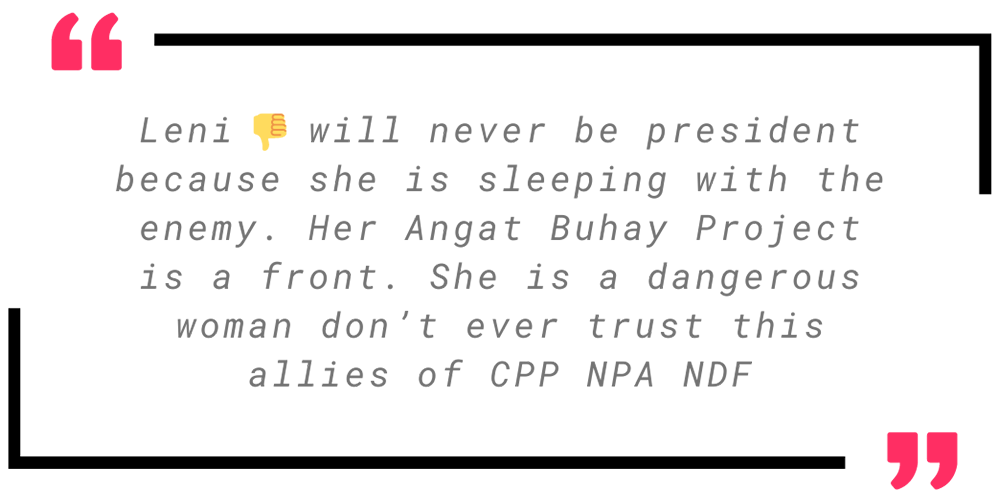

We mined the internet for fake news data.
After defining the goal of this project, we now move on to the next step: data collection. Data collection is the process of gathering relevant information that will help us answer the research questions.
Keywords
We used the following keywords in searching for relevant tweets.
angat npa
angat buhay npa
angat buhay npa cpp
angat buhay recruit npa
angat buhay cpp
leni ngo npa
angatbuhay npa
Tools
We collected tweets using two methods.
Manual collection
We manually typed in the keywords above in Twitter's search bar then diligently scrolled through the results.

Automated collection
We created Python scripts using snscrape to automate the collection of tweets containing the keywords above.
Machine learning heavily relies on high-quality data. To ensure that we model data accurately and produce good results, below are the criteria we established in selecting tweets to be included in our dataset.

Recent tweets posted in 2023 are not included. We will only select tweets posted between 2016 to 2022.
Tweets should explicitly claim the dis/misinformation as a fact. Here is a sample tweet from our dataset that passes this criteria:
Tweet contents will be labeled with one or more of the following content types:
Rational
[informational, functional, educational, or current event]

Emotional
[interactional, experiential, personal, community, relationship, cause-related]
Transactional
[product/service ads, branding, sales promotion, monetary]
We were unable to label any tweet in our dataset as Transactional.
Replies and quote tweets that agree with or affirm the original tweet containing dis/misinformation are also included in the dataset.

Twitter accounts will be tagged with one of the following account types:
Anonymous
Accounts that have pseudonyms, aliases, or untraceable names/bio
(anonymous, alt, spoof, troll accounts)
Identified
Accounts that have real names, bio and/or are verified
(known social media personality, celebrity, blogger, personal accounts)
Media
Accounts by news outlets/personalities
(mainstream/alternative media, organizations, journalists)